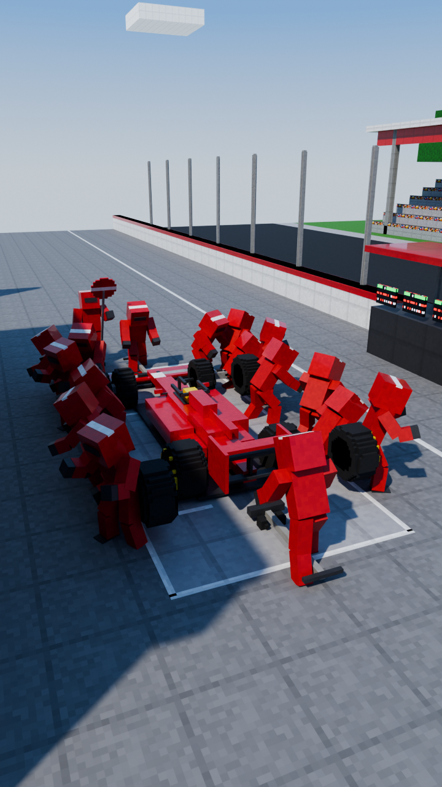
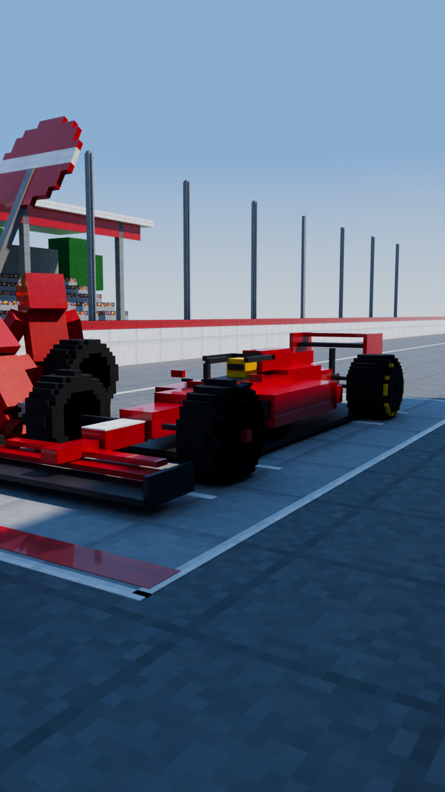
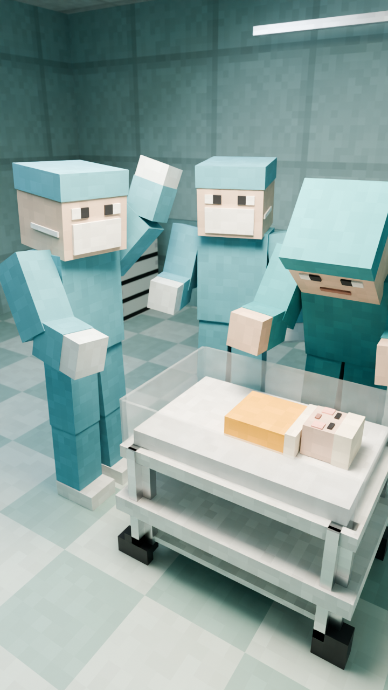

Blender 3D · block world: sky and clouds, track, grandstand, team garage, a sunlit ward · block people with pixel faces, masks and helmets · depth of field on hero shots · Montserrat Black captions


